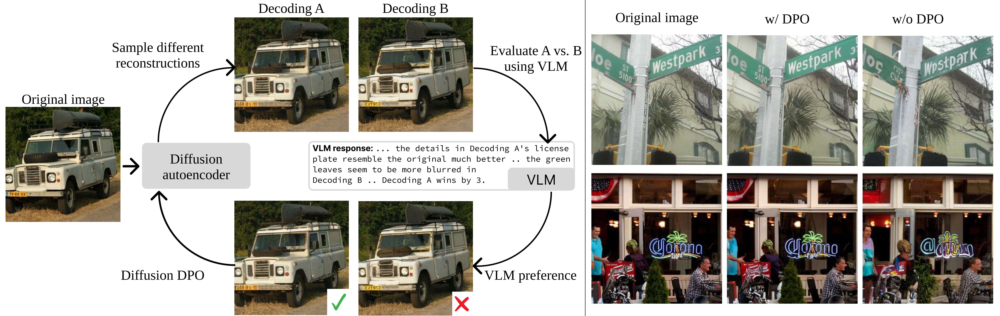

Can we use VLMs as judges to improve human-aligned image compression? Yes! In VLIC (Vision Language Models for Image Compression), we present a diffusion-based image
compression system designed to be post-trained with binary VLM judgments. VLIC leverages existing techniques for
diffusion model post-training with preferences, rather than distilling the VLM judgments into a separate perceptual loss
network. Please consult our paper for more details, and check out the visualizations on this page!

Gallery
Select a Scene from the bottom bar. Select a Method from the sidebar to compare against VLIC.
Candidate
Reference
Methods
We observe that VLIC produces high-quality reconstructions, particularly for human-relevant details such as text and faces. We conduct large-scale user studies and quantitative evaluations. Please consult the paper for the details. Thank you!